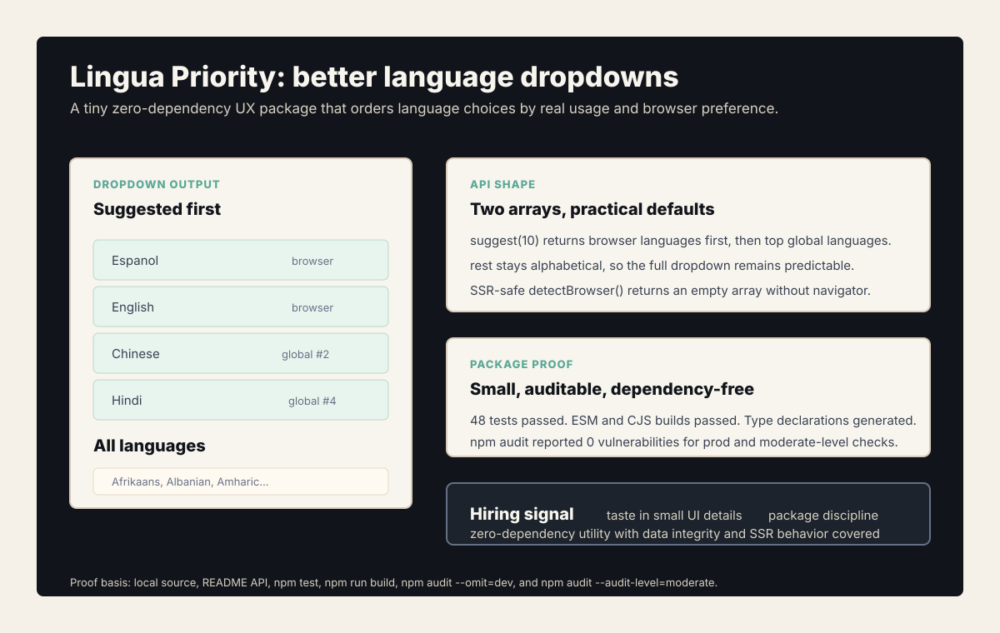
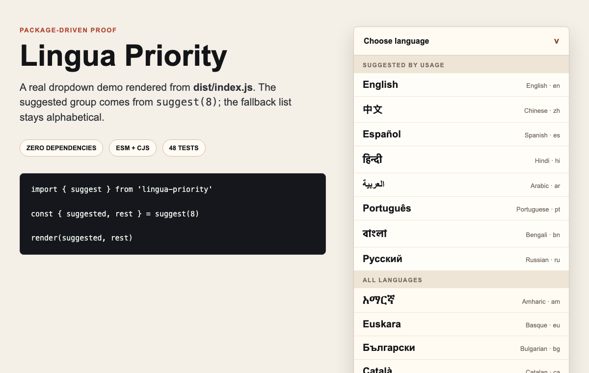

Problem
Most language selectors sort alphabetically, which buries high-usage languages such as Spanish under dozens of low-relevance choices. It is a small UX mistake, but it shows how often product defaults ignore real user behavior.
What I Built
Lingua Priority returns a suggested list and an alphabetical rest list. Browser languages come first when available, then top global languages backfill the list. The rest stays predictable for users who need the full catalog.
- UX judgmentPrioritizes likely choices while preserving full-language access.
- API shape
suggest(),getTop(),sortBy(),preset(),find(), andcodes(). - Package qualityESM, CJS, type declarations, zero runtime dependencies, SSR-safe browser detection.


dist/index.js output. The screen shows suggest(8) rendering suggested languages first, then the alphabetical fallback list.Technical Decisions
- Return simple arrays instead of prescribing a framework-specific component.
- Keep browser detection SSR-safe so Next.js and Remix users avoid hydration problems.
- Ship ESM, CJS, and type declarations while preserving zero runtime dependencies.
- Cover data integrity, sorting, presets, lookup, browser detection, and suggestion behavior with tests.
What This Proves
Lingua Priority is small, but it is useful hiring evidence: taste in defaults, respect for user context, package discipline, and the ability to turn a sharp UX observation into an auditable utility.
Public Evidence
- README portfolio/status section added and pushed.
npm testpassed: 48 tests.npm run buildpassed with ESM, CJS, and type declarations.npm audit --omit=devandnpm audit --audit-level=moderatefound 0 vulnerabilities.- Package-driven dropdown screenshot captured from built output.
- Proof transcript — available on request.